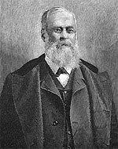

|

|

|
|
|
Newspaper owner and journalist, Charles Anderson Dana played
a prominent role during the Civil War as an Assistant
Secretary of War. Born in New Hampshire in 1819, Dana
attended Harvard and later joined a group of utopian
intellectuals at Brook Farm, Massachusetts. When Brook Farm
dissolved in 1845, Dana traveled widely in Europe. Upon his
return in 1849, he assumed the position of managing editor
of Horace Greeley's New York Tribune. A passionate
abolitionist, Dana used the Tribune as a forum to
denounce the policies and positions of the slave-owning
South.
In 1862, Dana resigned over differences with Greeley
about the newspaper's editorial positions on the Civil War.
Shortly thereafter, Secretary of War Edwin Stanton assigned
Dana as a frontline investigator with the title of Second
Assistant Secretary of War. Serving in the Western Theatre,
Dana investigated pay irregularities, fraud, and was
unofficially assigned to report on General Ulysses S.
Grant's conduct. Dana sent many admiring reports to
Washington, D.C. reinforcing the President's confidence in
Grant. Abraham Lincoln lauded Dana for being the "eyes and
ears of the government at the front." In 1864, he was
promoted to Assistant Secretary of War.
In 1868, Dana bought the New York Sun. He wrote
that he wanted to publish news that was "the freshest, most
interesting and sprightliest." Under Dana's guidance, the
Sun gained renown for its young, college-educated
reporters, human-interest stories, and varied editorials.
The Sun opposed President Johnson's impeachment, and
supported Grant's run for the presidency in 1868, but backed
the Liberal Republicans in 1872, and their candidate, Dana's
former boss and competitor, Horace Greeley. The Sun,
which sold 130,000 papers a day, became a major national
newspaper by the late 1870s. In the Gilded Age, Dana and
The Sun were known for their support of laissez-faire
business.
Dana died in 1897. His Recollections of the Civil
War was published shortly thereafter.
Source: Joan Waugh, ed., Facts on File Encyclopedia of American
History: Civil War and Reconstruction, 1856 to 1869 (New York: Facts on
File, 2003), 88.
|